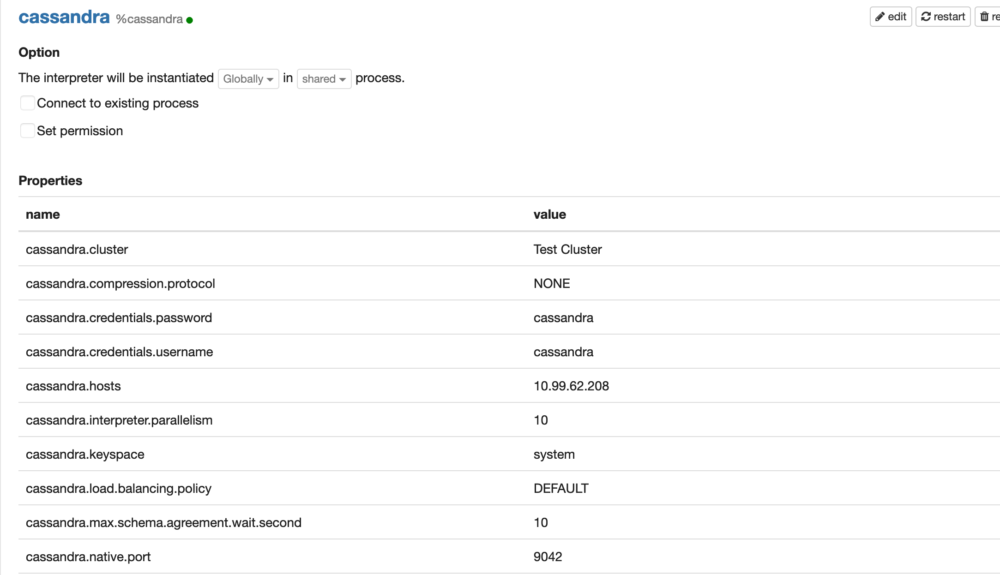

タイトル通り。zeppelinからcassandraとsparkを使うまで簡単に構築メモ。
kubernetesとhelm 3.3.1を使って構築する。sparkとzeppelinのインストール→Cassandraのインストールの流れで説明。
Pod単位で弄れるが為だけにkubernetesを使います。Namespace分けたりIngress追加したりなどIaCならではの機能を活かした実装はここではしません。悪しからず。
sparkとzeppelin
- リポジトリはhttps://github.com/helm/charts/tree/master/stable/spark
- デプロイすると、MasterPod1台、WorkerPod1台が動く。
- Zepplin上のファイルはデフォルトで記憶される。
values.yamlにおいてServicePortの編集
- デフォルトのままだとsparkWebUIとzeppelinのServicePortが競合する。なので、どちらかのServicePortを変更する。
- ここではsparkWebUIのServicePortを8080から8081に変更する。
$ vim spark/values.yaml
...
WebUi:
Name: webui
ServicePort: 8081
ContainerPort: 8080
...
インストール
$ helm install spark ./spark
インストール確認
- defaultのnamespaceにインストールされていることを確認。
$ kubectl get pod
spark-master-877d79587-shv7g 1/1 Running
spark-worker-87d4579f4-7fsg4 1/1 Running
spark-worker-87d4579f4-lb7ft 1/1 Running
spark-worker-87d4579f4-tvcnb 1/1 Running
spark-zeppelin-85d6c884d8-289mb 1/1 Running
zeppelinとSparkWebUIにアクセスの確認
- ブラウザ上から
localhost:8080とlocalhost:8081へのアクセスへの確認ができれば完了。


cassandra
- リポジトリはhttps://github.com/bitnami/charts/tree/master/bitnami/cassandra
- user/passwordを設定しやすそうだったのでbitnamiを選択。
values.yamlにおいてuser/passwordの編集
- デフォルトのままだとuserはcassandra、passwordはランダムで作られる。なので、指定したもので作られるように設定する。
- ここではuserをcassandra、passwordをcassandraとする。
...
dbUser:
user: cassandra
forcePassword: false
password: cassandra
...
インストール
$ helm install cassandra ./cassandra
インストール確認
- defaultのnamespaceにインストールされていることを確認。
$ kubectl get pod -n default
cassandra-0 1/1 Running
Zeppelin上のCassandraのInterpreter
- zeppelinからcassandraへ接続する為の設定を変更。
cassandraが動いているClusterIPを確認
$ kubectl get svc
NAME TYPE CLUSTER-IP EXTERNAL-IP PORT(S) AGE
cassandra ClusterIP 10.99.62.208 <none> 9042/TCP,9160/TCP,8080/TCP 1d
Interpreterの設定変更
- ブラウザ上から
http://localhost:8080/#/interpreterを開く。 - 上記で確認した情報を元に
cassandra.credentials.password、cassandra.credentials.username、cassandra.host、cassandra.native.portの設定を変更。

完了確認